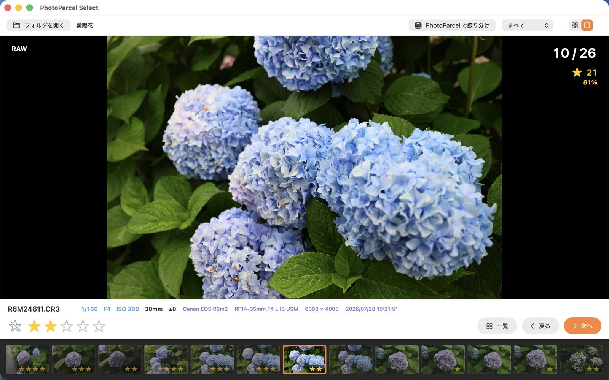
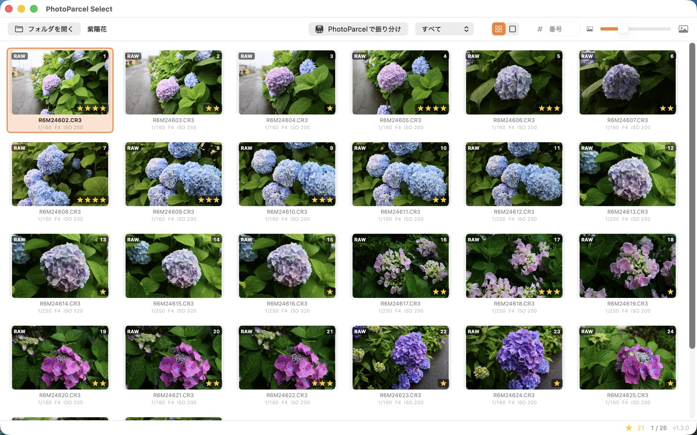
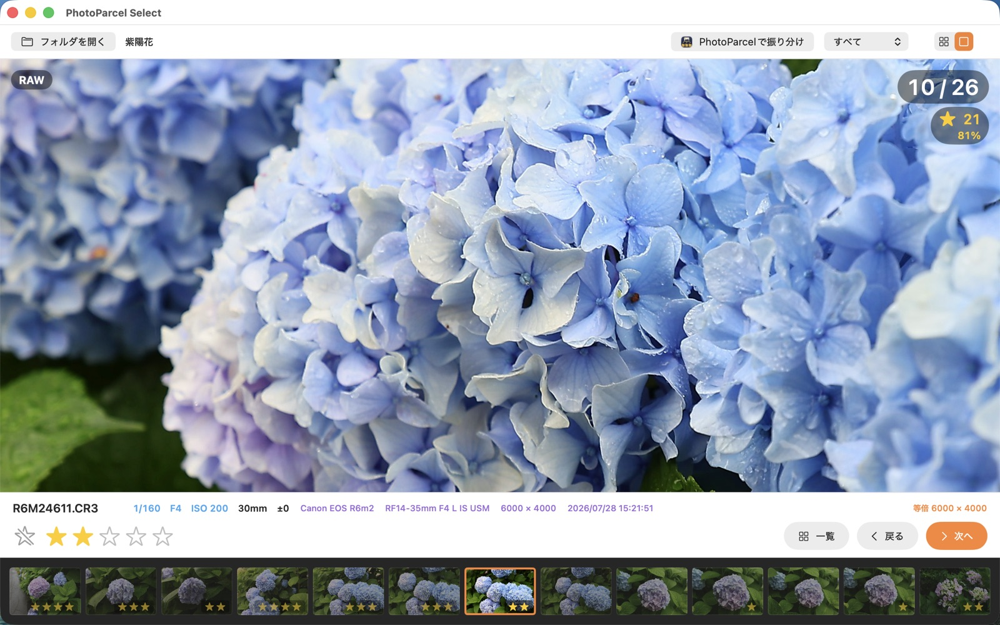
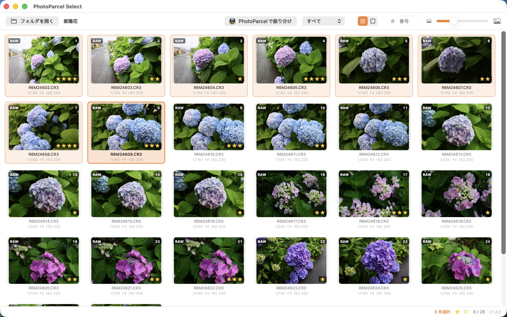
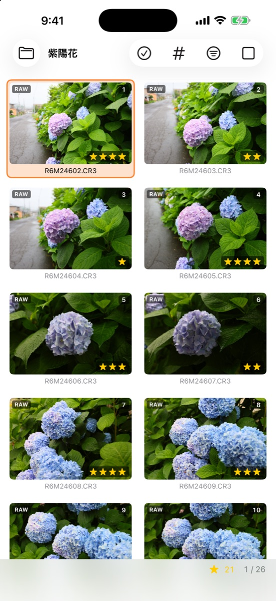
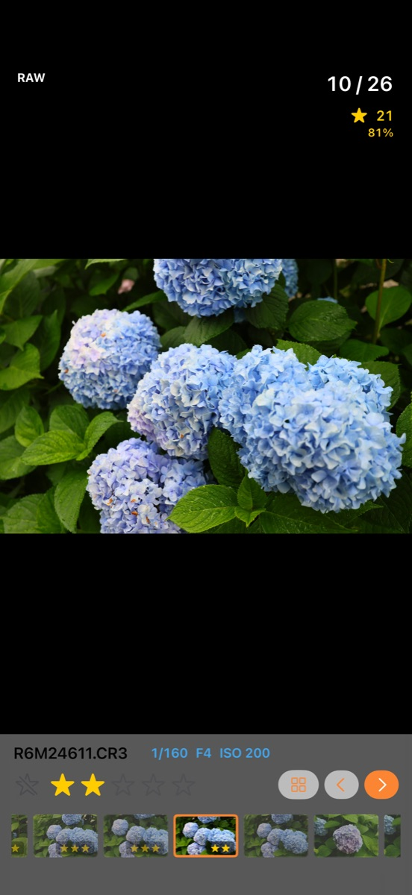
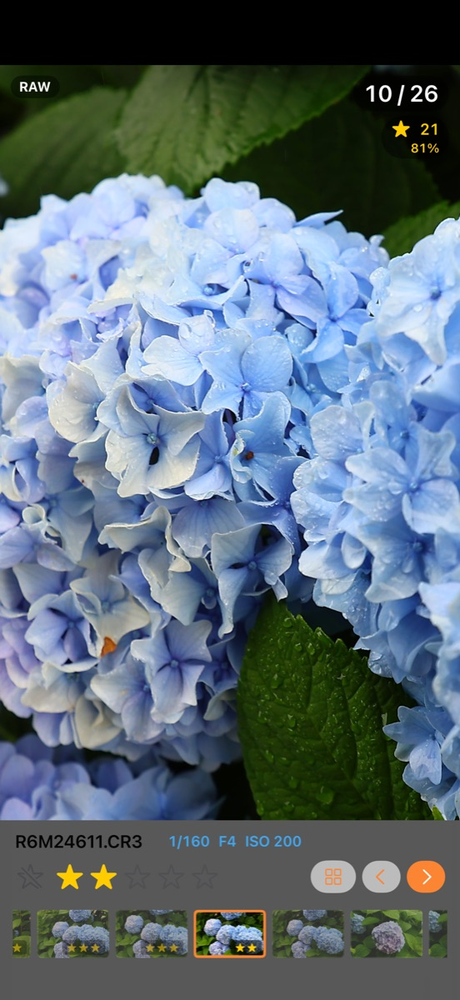
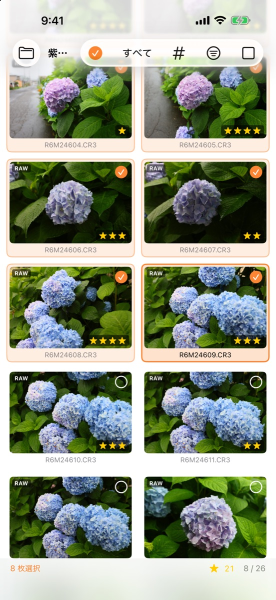

PhotoParcel Select
フォトパーセル セレクト
RAW のセレクトを、キー1つで。
撮影した大量の RAW から、残す1枚を選び出す作業に絞ったアプリです。JPEG の写真も同じようにセレクトできます。矢印で送って、1〜5 で星。星は RAW なら XMP に、JPEG なら写真の中に書き込むので、XMP に対応した現像ソフトにそのまま引き継げます。JPEG は 1.5 から
- Mac
- iPhone
- iPad
- 一度の購入で全部の端末に
- 通信なし・データの収集なし

速く送って、迷わず決める
何百枚もの中から、使う写真だけに星を付けていく。その繰り返しを、手を止めずに続けられるように作りました。
RAW でも待たない
RAW を現像せず、ファイルに埋め込まれたプレビューで表示するので、次々に送れます。等倍のときだけ、必要な範囲を現像します。
キー1つで星、そのまま次へ
1枚表示で 1〜5 を押すと星が付いて次の写真へ。0 で星を外して次へ。iPhone・iPad は星をタップ。
RAW も JPEG も、現像ソフトへ引き継ぐ
星は自動で書き出し。RAW は隣の .xmp に記録し、写真ファイルには一切書き込みません。JPEG は写真の中に星だけを書き込みます1.5 から。キーワードや現像設定には触れません。
前後を見比べながら
1枚表示の下に前後のサムネイルが並ぶので、似た構図が何枚続くかを見ながら、どれを残すかを決められます。
等倍でピントを確かめる
Space（iPhone・iPad はダブルタップかピンチ）で等倍。いちばんシャープな部分を小窓に等倍で出す機能も1.5 から。
出先の iPad でも
外付け SSD の写真も、ファイル App から見えるフォルダならそのままセレクト。帰ってから Mac の現像ソフトへ。
大量の中から1枚を探す
並びの番号、100枚ごとの目盛り、番号を打って飛ぶ機能で、何百枚あっても目当ての1枚へ。
PhotoParcel と行き来
Mac では姉妹アプリ PhotoParcel とボタン1つで行き来。コピー → セレクト → 現像 → 振り分けを一続きに。
画面
横にすべらせると、ほかの画面も見られます。
Mac



iPhone




使い方
開いて、送って、星を付ける。
はじめに
- 「フォルダを開く」で、カメラからコピーした写真フォルダを選びます。
- 矢印キー（iPad はタップとスワイプ）で写真を送りながら、1〜5 で星を付けます。
- 星は自動で書き出されます。RAW は
写真名.xmpとして同じフォルダに、JPEG は写真ファイルの中に記録します（JPEG は 1.5 から）。 - お使いの現像ソフトでそのフォルダを読み込むと、星が反映された状態で開きます。
読み込み前に XMP を書き出しておくのが前提です。すでに読み込み済みのフォルダに後から書き出した場合は、現像ソフト側でメタデータを読み込み直す操作が必要になります。
キーボード操作（macOS / iPad + Magic Keyboard 共通）
| 矢印 | 写真を送る（1枚表示では上下も1枚ずつ） |
|---|---|
| 1〜5 | 星を付ける（1枚表示では、付けたあと次の写真に進みます） |
| 0 | 星を消す（1枚表示では、そのまま次の写真に進みます） |
| Shift + 矢印 | 範囲を選択する |
| ⌘A | すべて選択（⇧⌘A で解除） |
| ⌘Z | 星の変更を取り消す（⇧⌘Z でやり直し） |
| Return | 一覧と1枚表示を切り替える |
| Space | 等倍で表示（macOS は長押し、iPad は押すたび切り替え）。macOS はトラックパッドのピンチでも等倍にできます |
| Esc | 一覧に戻る |
iPad / iPhone でのタッチ操作
- 写真をタップして選択、もう一度タップで1枚表示
- 1枚表示では左右スワイプで送り、下スワイプで一覧に戻る
- 星をタップすると、その評価が入って次の写真に進みます
- ダブルタップ、または2本指を広げるピンチで等倍。指を広げた場所が等倍の中心になります。そのままドラッグして見たい場所へ動かせます
- 長押し、または右上のチェックマークで複数選択に入ります
1枚表示の見かた
- 画面の下に前後のサムネイルが並びます。似た構図が何枚続いているかを見ながら、その中のどれに星を付けるかを決められます。すでに付けた星も表示されます
- サムネイルを押すと、その写真が表示されます。iPad / iPhone では、サムネイルの帯を左右になぞって前後を見渡せます
- 右上に、いま何枚目を見ているか、星を付けた枚数、その割合が出ます
- 写真の左端の「等倍」ボタンをオンにすると、写真の中でいちばんシャープな部分を右下の小窓に等倍で表示します。すべての写真を等倍にしなくても、微ブレやピントの外れに気づけます。写真を押すと、その場所を小窓で確かめられます（初めはオフです） 1.5 から
- 星は行の左端に並びます。その左にある「星なし」を押すと、星を外して次の写真に進みます
- 右下のボタンは、左から「一覧」（一覧に戻る）、「戻る」（1枚戻る）、「次へ」（星を変えずに次へ）です
たくさんの写真から目当ての1枚を探す
- サムネイルの右上に、並びの中で何番目かが出ます
- 101枚以上あるときは、一覧の右端に 100枚単位の目盛りが出ます。押すとその位置までスクロールします（選んでいる写真は変わりません）
- 番号を打ってその写真へ飛べます。macOS は上のツールバーの番号入力欄、iPad / iPhone は「#」のボタンです
よくある質問
どの RAW 形式に対応していますか？
macOS / iPadOS が対応している形式を読み込めます（Canon CR3・Sony ARW・Nikon NEF など）。OS が知らない機種の RAW は読み込めず、サムネイルに「読み込めません」と表示されます。
表示が速いのはなぜですか？
RAW の現像を行わず、ファイルに埋め込まれたプレビュー画像を使っているためです。等倍表示のときだけ、必要に応じて画面に映る範囲を現像します。
等倍表示が実際の画素数より小さいことがあります
埋め込みプレビューの大きさは機種によって異なります。プレビューが実サイズに足りない場合（Sony ARW など）は自動で RAW 現像に切り替わり、情報バーに「RAW現像」と表示されます。
写真が書き換えられることはありませんか？
RAW の写真ファイルには一切書き込みません。星は隣に置く .xmp ファイルに記録します。JPEG だけは（1.5 から）、現像ソフトが隣の .xmp を読まないため、星を写真ファイルの中に書き込みます。書き換えるのは星の情報だけで、画像そのものや撮影情報には触れません。すでに XMP がある場合も評価の箇所だけを書き換え、キーワードや現像設定には触れません。
現像設定は引き継げますか？
引き継げるのは星の評価だけです。現像設定（crs 情報）は意図的に書き出していません。現像ソフト側で誤って解釈される恐れがあるためです。
iPad で外付け SSD の写真をセレクトできますか？
できます。ファイル App から見えるフォルダであれば選択でき、XMP もそのフォルダに書き出されます。移動中に iPad でセレクトを終えて、帰宅後に Mac の現像ソフトへ、という使い方を想定しています。
PhotoParcel との連携とは？
macOS 版では、姉妹アプリ PhotoParcel がインストールされていると、ツールバーに受け渡しボタンが表示されます。コピー → セレクト → 現像 → 振り分け、という一連の流れを行き来できます。
途中でアプリを閉じたら、どこまで見たか分からなくなりませんか？ 1.5 から
フォルダごとに、最後に星を付けた写真を覚えています。アプリを終了したり、フォルダを開き直したりしても、その写真が選ばれた状態から始まります。「星なし」で確定した写真も、そこまで見た位置として覚えます。
サブフォルダの中も表示されますか？
選んだフォルダの直下のみを表示します。カメラから1回分をコピーしたフォルダを開く使い方を想定しています。
お問い合わせ
不具合のご報告やご要望は、メールでお気軽にどうぞ。
PhotoParcel Select は外部と通信せず、データを集めません。くわしくは プライバシーポリシー をご覧ください。